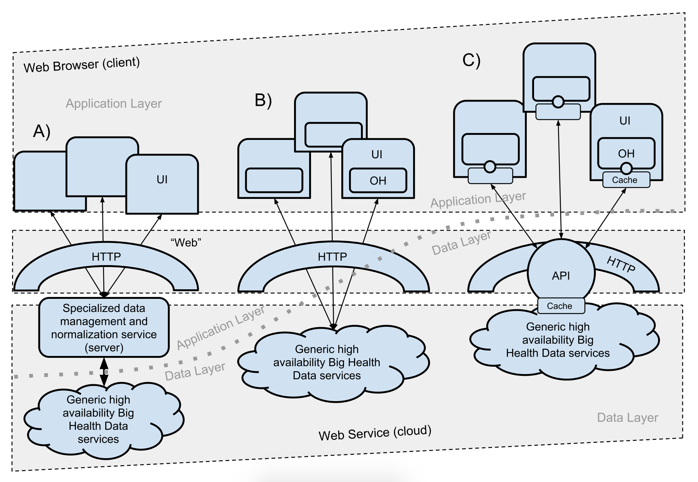
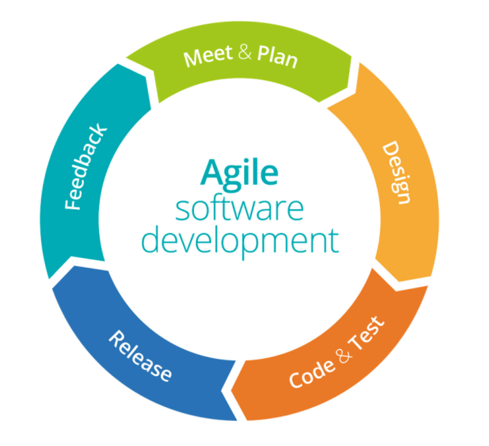

“In the future, the rapidity with which any given discipline advances is likely to depend on how well the community acquires the necessary expertise in database, workflow management, visualization, and cloud computing technologies.”
In other words, we are increasingly seeing a need to move away from private, and often siloed, data analysis efforts, toward a more community-driven pursuit of knowledge from biological information.
To develop a Web application which will aid researchers in navigating this data-rich landscape through customized selections, high-quality visualizations, and ease-of-use.
